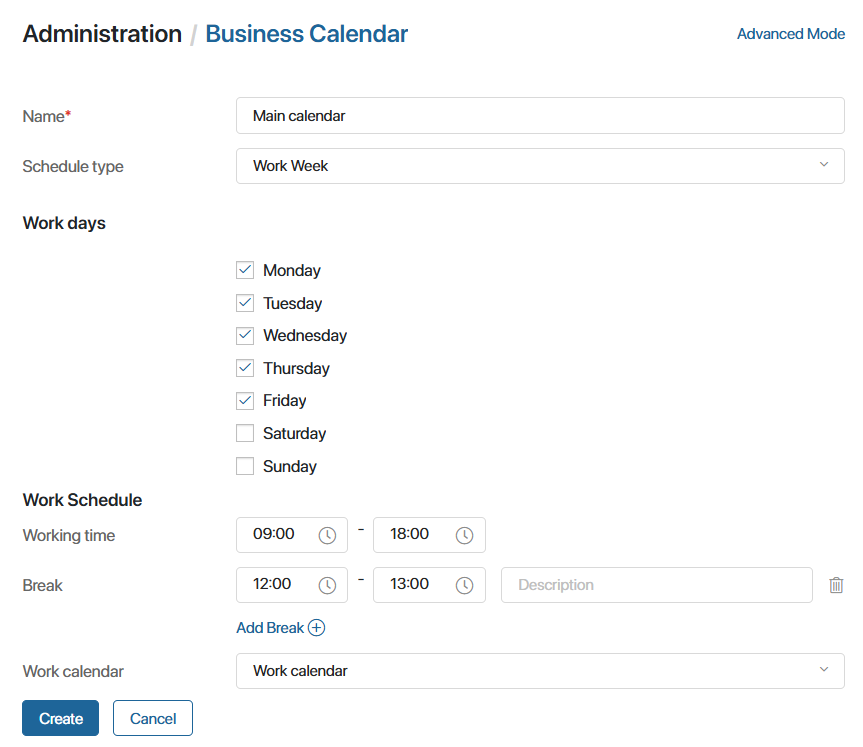

The Business Calendar is used to specify working and non-working days, and establish the working hours. This information is used in business processes when calculating task deadlines or running a process on schedule.
For example, the payroll process should start on the 10th and 20th days of the month. If these dates fall on a non-working day, then the process start will be moved to the previous working day. To do that, you can enable business calendar tracking in the settings of the start event.
Начало внимание
Only the system administrator can configure the business calendar.
Конец внимание
Go to Administration > Business Calendar. The page displays the company’s default work schedule, which applies to all employees. It also includes public holidays and shortened workdays from the work calendar.
Starting from version 2024.11 in BRIX, you can:
- Modify the default business calendar while continuing to use it for all users.
- Create a business calendar from scratch or configure multiple calendars with individual schedules and assign them to different employees.
- Create a work calendar with holidays and shortened workdays specific to your company and link it to one or all work calendars.
- Import business and work calendars configured in another program.
Settings of the business calendar in versions previous to 2024.11
The business calendar allows you to configure work schedules, non-working days, holidays, and short day.
Please note that you cannot specify a past calendar date as a short or holiday day. You can delete a set day by clicking the recycle bin icon.
You can view and add short days and holidays for the previous period using the Load current year button. The data can be displayed sequentially for each year from the current year till 1970. The name of the button changes as the data is loaded. Consider the example below, where 2025 is the current year:
начало внимание If you change the settings of the business calendar, you should republish the processes that have time limits set based on the business calendar. Then the new work schedule will be applied to the settings configured. конец внимание |


Create a business calendar
Starting with version 2024.11, you can configure business calendars for your company from scratch or create multiple calendars in Administration > Business Calendar. Here’s how:
- In the top-right corner of the page, click New Calendar.
- Fill in the fields in the pop-up window:
- Name*. Enter a name for the calendar.
- Schedule type. Choose between scheduling by work weeks or work shifts. Select the appropriate type from the drop-down.

For shift-based calendars, specify the number of working and off days in a shift. For instance, for 2/2 shifts, add four days and mark two as working days.
To set different hours for each day, switch to Advanced Mode by clicking the relevant button in the top-right corner. Uncheck the Standard Schedule option next to a day and specify the working hours and breaks.
You cannot return to regular calendar settings mode once advanced editing is enabled. Future edits will always open in advanced mode.
- To include holidays and shortened days in the calendar, select a work calendar from the drop-down list.
By default, the system uses a work calendar with official public holidays. You can customize these exceptions to fit your company’s schedule. To learn more, see Create a work calendar.
- Click Create.
The new calendar will appear on the page and be available in the system. You can:
- Set it as the default calendar for all employees by default.
- Assign it to specific users.
The assigned calendar determines task deadlines for the employee.
Create a work calendar
To take public holidays and shortened days into account, set up a work calendar and link it to your business calendar. You can also set additional holidays that are celebrated in your company, such as professional holidays.
To create a work calendar:
- Navigate to Administration > Business Calendar and click Work Calendar in the top-right corner.
- On the new page, you can:
- Go to the template to fill in the Work Calendar and add holidays to it.
- Click the +Work Calendar button and customize the calendar from scratch.
- In the settings specify the name of the calendar and select a year.
- Click Add to add exceptional and non-working days:
- Select the date. Past dates cannot be marked as exceptions.
- Choose the day type:
- Exceptional. A workday with non-standard hours (e.g., shortened).
- Non-working. A non-working day (e.g., a holiday).
- Add a brief description of the exception.
- For exceptional days, specify work hours and breaks.
- Mark all exceptions for the calendar year (e.g., December 24, January 1, etc.). To delete an entry, click the recycle bin icon.
- Click Create to save the calendar.
- To apply exceptions, select the work calendar when creating or editing a business calendar.
Display of exceptions:
- In employees’ personal calendars, holidays appear in green.
- In drop-down calendars for date/time fields, holidays are marked in red.
Set the default business calendar for the company
The business calendar affects employee schedules, task deadlines, and business processes. To set a default calendar for all employees:
- Go to Administration > Business Calendar.
- Select a week-based calendar and click the three-dot menu.
- Click Set As Default.
The calendar will be marked with a star icon and applied to employees without individual schedules.
Assign an individual business calendar
You can assign a specific business calendar to an employee so that their task deadlines are calculated according to this individual schedule:
- Select an employee and open their page for editing. Select the calendar in the Business calendar field.
- Assign the calendar during the employee invitation process.
- Assign a calendar to several users at once using a TypeScript script. Read more about it in BRIX TS SDK.
You can also schedule changes to an employee’s business calendar using the  button next to the Business calendar field.
button next to the Business calendar field.
The schedule and planned changes will be visible in the employee’s profile settings.
Import a business or work calendar
You can import a calendar configured in another system to BRIX. For example, a work calendar with public holidays.
To do this:
- Create a .csv file with calendar data and compress it into a .zip file.
- In BRIX, go to Administration > Business Calendar.
- For a business calendar, click the button in the upper right corner of the page.
- For a work calendar, click Work Calendar and click in the upper right corner of the page.
- Upload the file from your computer and click Import.
Edit, export, and delete a calendar
You can edit, export to another program, and delete a business or work calendar.
For business calendars:
- Go to Administration > Business Calendar.
- Click the three dots icon on the desired calendar page.
- Select an action:
- Edit. Update the schedule or link a production calendar. Re-publish business processes if the updated calendar affects time constraints.
- Export. Download the calendar as a .csv file for use in another program.
- Delete. Remove unused calendars. If the deleted calendar was assigned to employees, their schedules will switch to the default calendar.
All work calendars are stored under Business Calendar > Work Calendar. You can perform the following actions with them using the icons:
- Edit a work calendar.
 Delete a work calendar. If linked to a business calendar, exceptions will no longer apply. The set work schedule will be applied.
Delete a work calendar. If linked to a business calendar, exceptions will no longer apply. The set work schedule will be applied. Export a work calendar. The created .csv file can be used in another application.
Export a work calendar. The created .csv file can be used in another application.
Found a typo? Select it and press Ctrl+Enter to send us feedback